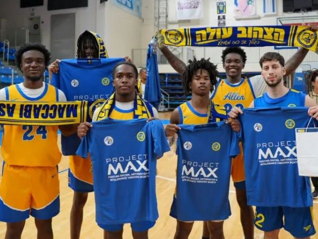

כשאשדוד פגשה את קרוליינה: אימון משותף ומשחק ראווה
מכבי אשדוד אירחה את קבוצת הכדורסל של Allen University למפגש שאינו חלק מהליגה. לפי ONE, המשחק חולק לשישה מקטעים בני חמש דקות; תוצאה לא פורסמה.

הסיפור בקצרה
בלי נקודות ליגה ובלי טבלת תוצאות, מכבי רוטשטיין אשדוד אירחה ביום רביעי, 21 באוקטובר, את קבוצת הכדורסל של Allen University מדרום קרוליינה. המפגש בהיכל הקריה כלל אימון משותף ומשחק ראווה, כפי שפרסם המועדון בעמוד הפייסבוק הרשמי וכפי שדווח בוואלה ספורט, ב־ONE ובערוץ הספורט.
ONE דיווח כי משחק הראווה חולק לשישה מקטעים בני חמש דקות. המקורות שנבדקו לא פרסמו תוצאת סיום, ולכן אין כאן מנצחת או מפסידה: זה היה אירוע ידידותי מחוץ למסגרת הליגה, ולא משחק רשמי שנוסף למאזנה של אשדוד.
Allen היא אוניברסיטה היסטורית מקולומביה שבדרום קרוליינה. לפי האתר הרשמי שלה, היא נוסדה ב־1870 בידי הכנסייה האפריקנית־מתודיסטית־אפיסקופלית; מחלקת האתלטיקה שלה חברה מלאה ב־NCAA Division II מאז ספטמבר 2024. ההקשר הזה הפך את הביקור ליותר מאימון הכנה רגיל.
למפגש הייתה גם נקודת חיבור אישית לאשדוד. קפטן הקבוצה רוברט טרנר, שגדל בדרום קרוליינה, סיפר בדיווחים כי שוחח עם שחקני Allen על החיים בישראל ועל החוויה של שחקנים אמריקאים כאן. יו״ר מכבי אשדוד רונן הראל הציג את האירוח כאירוע משמעותי למועדון ולעיר.
לפי הדיווחים, הביקור יצא לפועל ביוזמת הקונסוליה הישראלית באטלנטה ובשיתוף Project Max וגורמים מ־Allen. המטרה שהוצגה הייתה להשתמש בספורט כמפגש בין קהילות וככלי נגד אנטישמיות וגזענות. על הפרקט באשדוד, המסר הזה קיבל ביטוי מעשי באימון ובמשחק משותפים — בלי להפוך את האירוע לתוצאה שלא פורסמה.